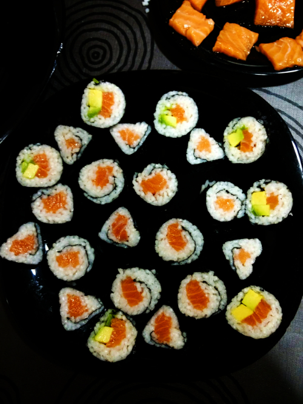

MAKI DE SALMÓN

INGREDIENTES
- Salmón - 250g
- Arroz redondo - Un vaso grande
- Alga Nori - 6 láminas
- Salsa de soja -A gusto
- Agua - Dos vasos grandes
- Azucar - Dos cucharadas soperas
- Sal - una cucharadita
PREPARACIÓN
- Se Cuece en arroz con el agua, la sal y el azúcar y se deja reposar
- Se coloca el arroz encima del alga Nori dejando una parte libre para que el alga solape al enrollarla
- Se pone el salmón en forma de tira sobre el arroz
- Se enrolla el alga y se corta en rodajas
- Se moja en salsa de soja para comer